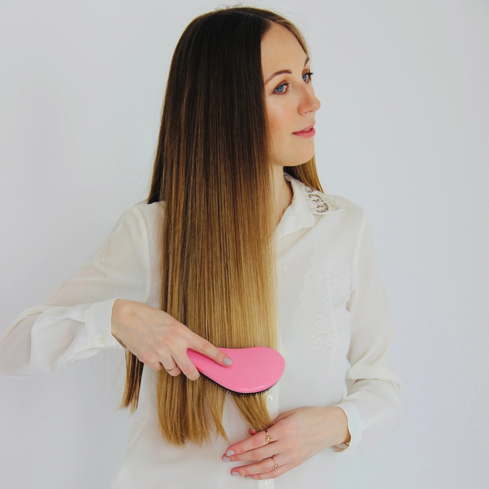
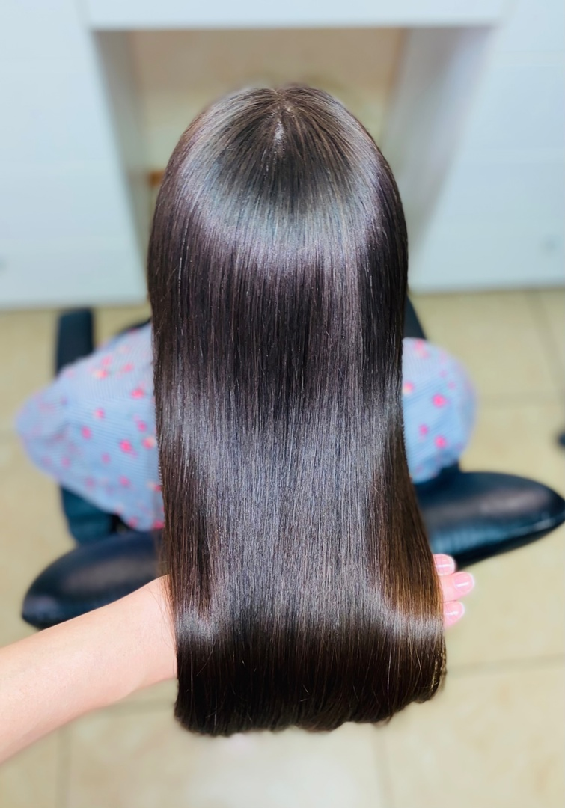

После переезда в новый город и полного отсутствия клиентов, прохождение курса помогло бьюти-мастеру Владиславе Безуруковой из Новосибирска нарастить доход с 10 до 50 тысяч рублей в месяц и увеличить число клиентов с 3-4 до 17-20 ежемесячно.
Теперь она уверенно двигается к своей мечте – путешествию в Тай или Вьетнам.
Мы взяли у нее короткое интервью:
— Можешь рассказать, что было до курса, какой средний доход был в месяц? Сколько клиентов?
— До курса (пол года назад) был переезд в другой город, соответственно доход практически нулевой, так как клиентскую базу, увы, с собой не прихватишь)
В первый месяц работы пришли пара клиентов, доход был ~10000р.
Не стала ждать, когда само-собой как-то все вырастет. Потому что понимала, пока сарафан начнет работать, пройдет куча времени. Поэтому очень вовремя познакомилась с вами)
Решение о покупке курса было быстрым. Начала проходить курс и приводить в порядок свою давно заброшенную группу в ВК)
— Может были какие-то сложности во время обучения на нашем курсе? На сколько сложно было учиться?
— Сложностей не припомню) Материал очень доступно изложен, все просто и понятно)
До рекламы пока не добралась, возможно, дальше будет сложнее…)

— Какие сейчас действия делаешь для привлечения клиентов? Как часто пишешь посты?
— Особо никаких)) группу оформила по урокам – клиенты идут))
Посты пишу редко, надо исправляться. Поста 2-3 в месяц пишу.

— А можешь поделиться, как изменилась жизнь, когда увеличился доход? Может что-то купила себе? Съездила в путешествие? Что-то смогла сделать, чего раньше не могла позволить себе?)
— Доход стал увеличиваться 3 месяца назад, с 10000 до 50000р. Пока мне этого достаточно, так как совмещаю работу с семьей и маленькими детьми) Стала чувствовать себя посвободнее, коплю на путешествие мечты.
— Все, остались последние 2 вопроса для интервью: Сколько у тебя сейчас клиентов в месяц? И сколько примерно было до обучения?
— Сейчас 17-20 клиентов в месяц. Повторюсь - мне этого хватает. Пока маленькие дети больше просто не осилю) А до обучения было 3-4 клиента в месяц.
Мечтаю следующей зимой хотя бы на месяц рвануть в Тай или Вьетнам)
— Класс) Очень рада, что курс помог! А мечты путь обязательно сбудутся!